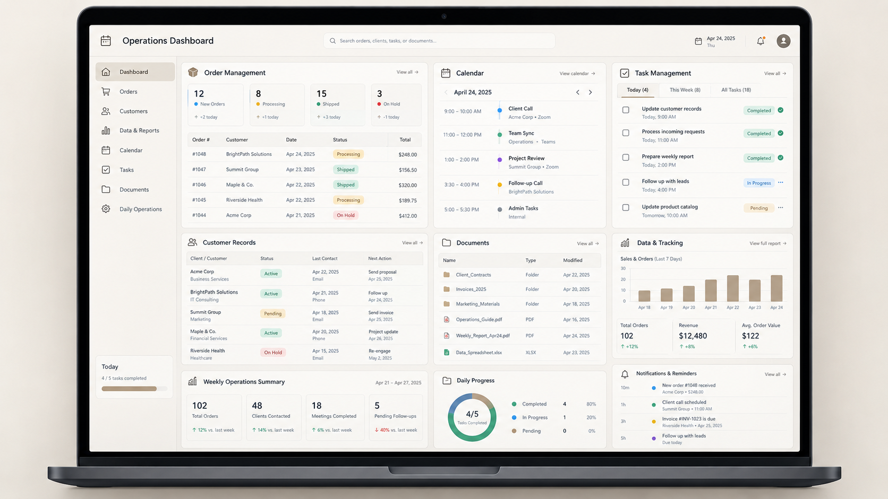

01
↗
Administrative & Business Operations
10+ YEARS · BUSINESS OPERATIONS

WHAT I SOLVED
Supported day-to-day business operations across customers, orders, records, inventory, documentation, invoicing and delivery coordination.
ADMINISTRATION
ORDERS
RECORDS
CUSTOMER SUPPORT
VIEW EXPERIENCE
↗